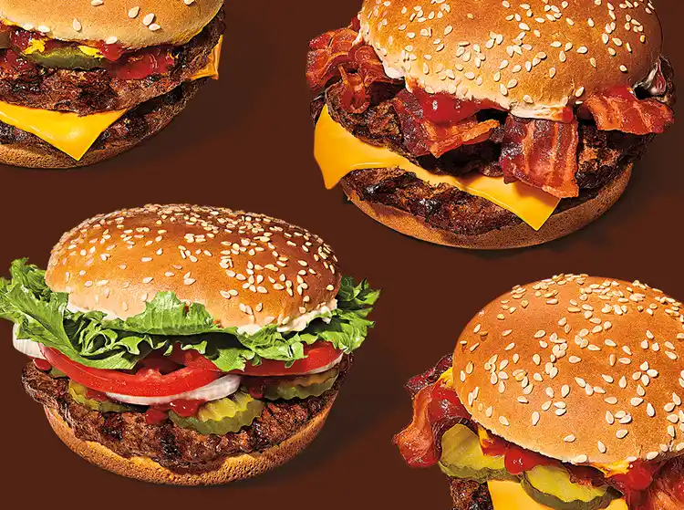

Flame Grilled Burgers
Description
A ¼ lb* of flame-grilled beef patty topped with juicy tomatoes, crisp lettuce, creamy mayonnaise, ketchup, crunchy pickles, and sliced white onions on a toasted sesame seed bun.
Ingredients
- 1 sesame-seed hamburger bun
- 1/4 lb. ground beef
- 1/16 teaspoon salt
- 3 dill pickle slices
- 1 teaspoon ketchup
- 3-4 sliced onion rings
- 2 tomato slices
- 1/4 cup chopped iceberg lettuce
- 2 teaspoons mayonnaise (Whopper sauce)
- 1 teaspoon ketchup
Steps
- Season ground beef with salt and pepper and form into patties. Butter hamburger buns in and toast in a skillet until lightly browned, and set aside. Heat a grill to medium-high heat. Cook the burger for two to three minutes each side, while cooking add a dash of salt to the burger.
- Build the burger by placing the meat on the bottom bun, then add 3 or 4 dill pickle slices, 3 or 4 onion ring slices, 2 to 3 tomato slices. Then squirt a small amount of ketchup onto the burger, add lettuce, and then spread mayonnaise onto the top bun, and place the top bun onto the burger.